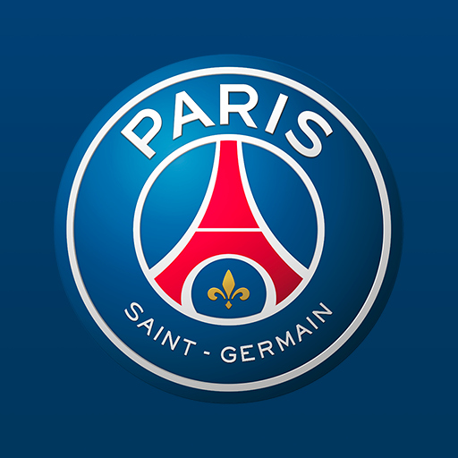
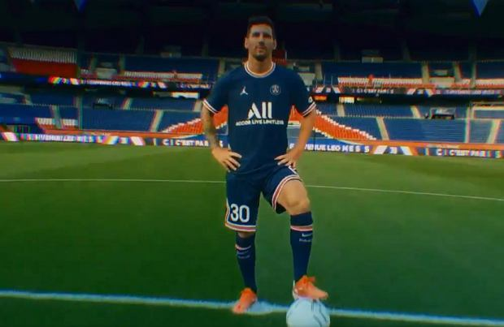
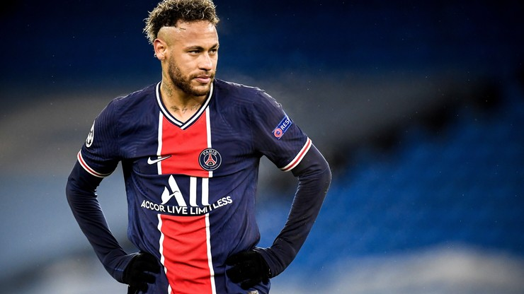
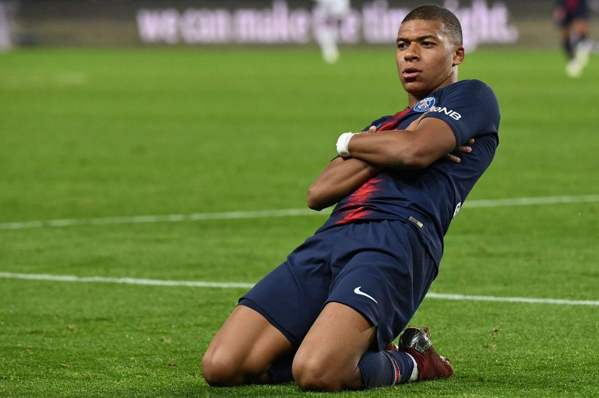

Moim ulubionym zainteresowaniem jest piłka nożna.
Uwielbiam także oglądać mecze naszej wspaniałej reprezentacji Polski. W klubowym świecie footballu kibicuje francuskiemu klubowi ze stolicy tego pieknego kraju czyli Paris-Saint-Germain. Drużyna została założona w 1970 roku.
PSG aktualnie gra w Ligue 1, w której to ma zdobyte dziewięć mistrzostw Francji. Oprócz tego paryska drużyna ma na soim koncie dwanieście Pucharów Francji, siedem Superpucharów Francji, osiem Pucharów Ligi Francuskiej oraz Puchar Zdobywców Pucharów i Puchar Intertoto. Drużyna jest prowadzona przez Mauricio Pochettino argeńtyńskiego trenera. Obecna wartość drużyny to 997,25 mln euro. Najdroższym transferem Paris-Saint-Germain jest brazylijski lewoskszydłowy Neymar Jr. Oprócz Brazylijczyka razem w ataku gra z nim francuz Kylian Mbappe i argeńtyńczyk Leo Messi.   Paryżanie również występują w elitarnych rogrywkach Ligi Mistrzów. Ani razu nie udało im się wygrać. Najbliżej tego osiągnięcia paryska drużyna była podczas meczu finałowego pomiędzy Bayernem Monachium, gdzie po bramce Kngsleya Comana Paris przegrał 1:0.Mimo iż klub dysponuje potężnym składem i budżetem ni jest w stanie wygrać Champions League.
Ja i tak będę kibicował swojej drużynie, niezależnie od tego czy wygra kiedyś Ligę Mistrzów czy spadnie Ligue 1. Jak gram w piłkę czesto wczuwam się w jedną z trzech gwiazd paryskiej drużyny. Uwielbiam ten sprot za rywalizację i możliwość wykazania się indiwidualnymi umiejętnościami i wierzę, że moja drużyna wygra jakiś puchar w tym sezonie. Viva Paris! https://pl.wikipedia.org/wiki/Paris_Saint-Germain_F.C.